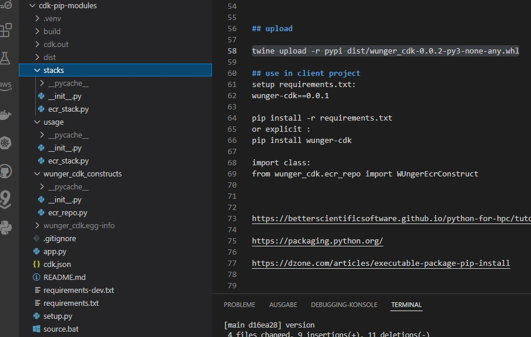
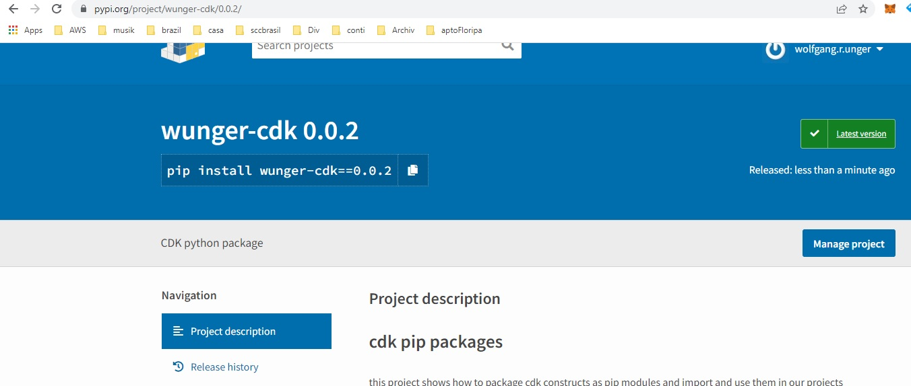

SCC
Brasil
os cloud gurus
Software Cloud Consulting
Your software development, cloud, consulting & shoring company
Pip modules for your generic, reusable cdk constructs

By Wolfgang Unger
If you have worked with cdk for a while and also in several projects, you might have already
asked yourself, how
to reuse some of the code you have already written ( and tested) for a similar requirement in
the next project.
If you use an object oriented language like for example Python with the CDK, one option might be
create reuse Superclasses
and adapt the behaviour if needed in a project subclass.
This a great approach to avoid copy and paste code and reuse code.
There is one disadvantage here. How to include the generic superclasses into different
projects?
If you just copy the code into the new project, you have all disadvantages of copy/paste ... for
example how
to keep the code up2date on different projects.
A better solution would be extracting the super classes in one repo and include this repo in
your other projects
for example as git submodule.
This approach avoids the copy/paste anti-pattern but again there is one disadvantage:
Projects with git Submodules will introduce more complexity in your projects.
For example in AWS CodePipeline you will need some extra adaptions to enable git submodules.
See my blog on how to use Git Submodules on this:
Also your developers will always have to update also the git submodule, not only the main repo.
But there is a different approach on how to reuse you cdk constructs ( or stack, but I recommend do it for constructs).
You can create you own pip pacakges, push them to a repository ( pypi or you artifactory) and now install and use in your projects!
Lets see how to do this:
Please see my github repo with the example project .
The project creates a simple example of a cdk construct, package it into a pip module, uploads to pypi and uses this module
again in the project as dependency in the requirements.txt
The project structure looks like this:

cdk_pip_modules
├── LICENSE
├── wunger_cdk_constructs ( folder with the constructs, content will be packaged as pip module)
│ ├── __init__.py
│ ├── cdk classes
│ ├── ...
├── stacks (wrapper stacks to test the constructs before creating the pip module)
├── usage ( stacks that will import and use the final pip modules)
├── README.md
├── app.py ( main python file, entry point )
└── setup.py
- the package wunger_cdk_constructs contains the cdk constructs we want to generalize, package and reuse in other projects.
the sample project only contains a simple ECR construct, please feel free to create your own cdk constructs for EC2, RDS, ECS or whatever
- the package stacks contains some cdk stacks to include and tests our cdk constructs during development. this way we can include them into the app.py
- the package usage shows how to use the pacakged modules in a client project. before you can use this package you first have to either
install the packages locally or remote, meaning setting up your .pypirc file and setup your repo .
- the file app.py includes the stack to synthesize. please comment out the stacks inside usage folder, once you have the modules ready
- requirements.txt includes our pip module
aws-cdk-lib==2.21.1
constructs>=10.0.0
wunger-cdk==0.0.2
After you have cloned this project, do the following:
first you must have a file named .pypirc in your user folder .
content must be some like this (for pypi):
[distutils]
index-servers=pypi
[pypi]
repository = https://upload.pypi.org/legacy/
username=change2yourusername
password=change2yourpassword
Next, adapt the setup.py , change the packages folder etc
Now you can develop your cdk constructs inside the folder wunger_cdk_constructs ( or your own folder)
Test these constructs with stacks, you write in folder 'stacks'
Include the stack in the app.py to be able to execute a 'cdk synth' Once this is working, you can build your modules.
Create the wheel with this command
python setup.py bdist_wheel
Install the package locally ( you might need to change the wheel name of course)
python -m pip install dist/wunger_cdk-0.0.2-py3-none-any.whl
By now you can already use the modules, inside this project . This is the intentation of the folder 'usage'. Please comment out the usage stack in app.py,to test this.
Now you can upload the module to the remote repo ( .pypirc file and repo must be setup correctly)
twine upload -r pypi dist/wunger_cdk-0.0.2-py3-none-any.whl
Once uploaded, on pypi this would be your package:

Once deployed in the repo you can use your pip module in your next projects, just include inside requirements.txt
aws-cdk-lib==2.21.1
constructs>=10.0.0
wunger-cdk==0.0.2
So, write your own cdk constructs and have fun.
Autor

Wolfgang Unger
AWS Architect & Developer
6 x AWS Certified
1 x Azure Certified
A Cloud Guru Instructor
Certified Oracle JEE Architect
Certified Scrum Master
Certified Java Programmer
Passionate surfer & guitar player